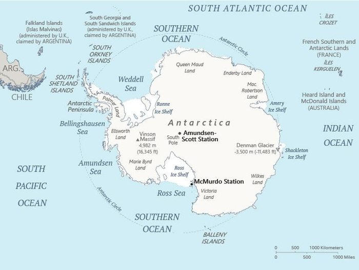
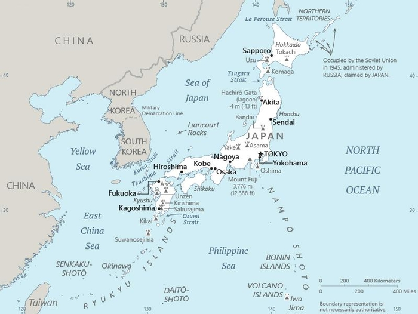

Mapping the World - Exploring Geography - Charting Journeys
Antarctica, 2021
Japan, 2022
Discover the intricacies of map making, the tools used by cartographers, and the modern techniques that have transformed this ancient art.
Who says mapping and the Super Bowl can't be friends?! Explore the fascinating insights from the 2024 Big Game Census. Maps can tell a story on the "where" of it all. What insights do you learn from this map?